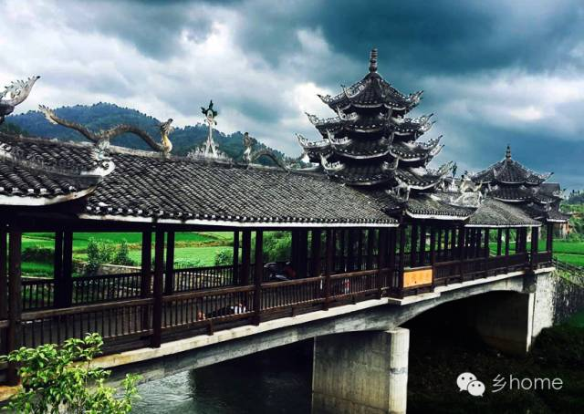

Doye Boxes [pdf]
Milo and Shen
The artifacts are part of The New Channel Program 2016 - a collaboration led by Dr. Nick Bryan-Kinns, Dr. Wei Wang, and b00t Consultants between Hunan University (China), Queen Mary University of London (UK) and b00t Consultants Ltd. (UK). The four artifacts focused on Interaction Design with Audio (IDwA) and were created in a popup maker space in Hengling Village, Tongdao County, Hunan Province with locally-sourced found objects and materials.
Exhibited: 18-25 Aug 2016 Sino-Italy design center, Huaihua, China; 9-16 Sep 2016 Inter/sections, London, UK, 7-21 July 2017 Yuelu Academy Museum, Changsha, China.
Reported: Xinhua Net, China Daily, China.org, QMUL, HNU.
Day 1: The innovation team arrived in Henglin Village, Tongdao county on July 15th noon, after lunch Nick and Wei arranged the task for everyone in the afternoon - culture probe. At 14:00 students set out to visit local houses and facilities and to interview local people, to feel the local Dong culture, and to look for inspiring local features and interesting cultural elements. Before dinner, Nick and Wei organized a meeting to share the findings and ideas. After, a schedule for the next day is worked out by the group. More...
Day 2: Brainstorming in the workshop. The students researched with the workshop coordinators on the design of the Dong Music Box reflecting on cultural meanings, forms for the designs, interaction modality and the sounds we wanted to preserve and share from the local culture. Local materials as bamboo sticks, weaves of reeds leaves, baskets, drum towers architecture and its uses, local instruments, provided inspiration. We presented and shared our ideas using colored post-its on a board on the wall. After lunch the group went to Huangdu village to study the traditional culture and music, enjoying and recording several performances from local musicians playing together or showing instruments. More...
Day 3: Visited the village of Pingri, where older women meet to make the Lucky flowers, small decorations that swing in the wind, to be hung in the Drum-tower, in new houses and other social buildings for good luck. The Lucky flowers are embellished with colorful threads, beams and feathers. We were welcome with enthusiasm and the women taught us how to make the lucky flowers; this might be really useful for the design project! More...
Day 4: Students continued to work on their design idea and build the demo of musical box. Miss Miao Yang from Industrial Design Society of Hunan Province visited the Hengling base and discussed with Prof. Nick, Prof Jennifer, and Dr. Wei about the design. Mr. Long, who is a bamboo craftsman from local, kindly helped students to make their design and give suggestions on further steps. More...
Day 5: The group kept working on the Dong Music Box design prototypes in order to present their work in the evening. The presentation event for the tesms was used as an occasion to share designs, difficulties encountered, and receive feedback from coordinators and the other teams. More...
Day 7: In the morning we went to Tongdao city, we walked around three different markets searching for materials. The shopkeepers greeted us warmly and helped us finding what we need. We spent lot of time in a shop that sells Dong clothing and silver, browsing the many colors of the delicate brocade. We went back to the base with useful materials for the design project, including threads, brocade belts and batteries. More...
Day 8: Music box workshop is coming to the end, students are busy working on the prototypes, some teams started evaluation with local villagers and tourists. Vic and Meng collected the materials and started the final design with villagers in Pingri Village. They recorded the interview and decided to use the stories of Lucky Box as sound elements. Lucia, Tina and Chris visited Huangdu with their design and did some interview and test with tourist in order to get more feedback on the graphic design and interaction design. Alessia settled down the music and started to make the music box more robust. More...
Day 9: Today it was an intense day of work at the SummerCamp. The groups continue working on the design prototypes for the Dong Music Boxes, testing the functioning and updating the projects with new features. One group worked on the interaction of the second Lucky Box and wrapped both of them with the colorful yarns bought in Tongdao market. Another group worked on adjusting the size of the Lantern, different kind of lighting to make it more portable, and the appearance of the graphic local pattern. The other team worked on the decoration of the cover of the Shadow Box and refined the lights patterns for the music recorded. More...
Final Day: The final presentation of 2016 New Channel Dong Music Workshop took place at Yuelu Academy. A sharing session between the music workshop team and Yuelu cultural product creative group also happened at the same time. In the New Channel camp, the HNU-QMUL team focused on musical products, based on surveying on traditional local culture in Dong minority area, combining featured craftsmanship like Dong brocade, bamboo weaving, wood carving, as well as product design and interactive technology, produced four creative cultural products with the feature of Dong minority group as well as impressive interactive experience. More...
Dong Tunes
Dong Shine
Doye Boxes


{kind=link}
{kind=link}
{kind=link}
{kind=link}
{kind=link}
{kind=link}
{kind=link}
{kind=link}